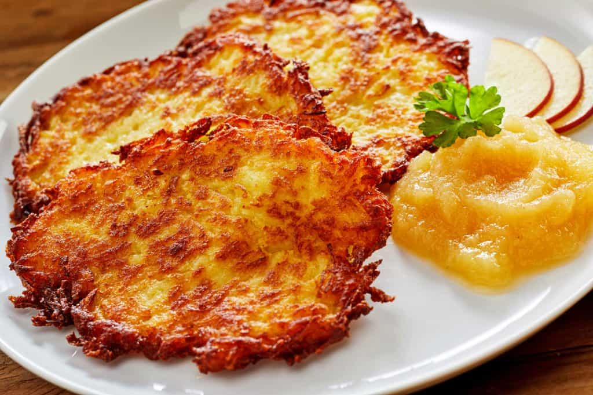

KARTOFFELPUFFER

INGREDIENTS
- 2 large potatoes, peeled
- 1 small onion, finely chopped
- 2 eggs, lightly beaten
- 2 tablespoons all-purpose flour
- 1 teaspoon salt
- 1/2 teaspoon black pepper
- Oil, for frying
INSTRUCTIONS
- Using a grater or food processor, grate the peeled potatoes into a large bowl.
- Add the finely chopped onion to the bowl with the potatoes and mix well.
- Using a clean kitchen towel or cheesecloth, squeeze out as much liquid as possible from the
potato-onion mixture.
- Transfer the squeezed mixture to a separate bowl and mix in the lightly beaten eggs,
all-purpose flour, salt, and black pepper.
- In a large skillet, heat about 1/4 inch of oil over medium-high heat.
- Once hot, drop spoonfuls of the potato mixture into the skillet, using a spatula to flatten and shape
them into pancakes.
- Cook the potato pancakes for about 3-4 minutes on each side, until golden brown and crispy.
- Using a slotted spatula, transfer the cooked pancakes to a paper towel-lined plate to drain off any
excess oil.
- Repeat with the remaining potato mixture, adding more oil to the skillet as needed.
- Serve the Kartoffelpuffer hot with your favorite toppings, such as sour cream, applesauce, or chives.
- Serve and enjoy!.